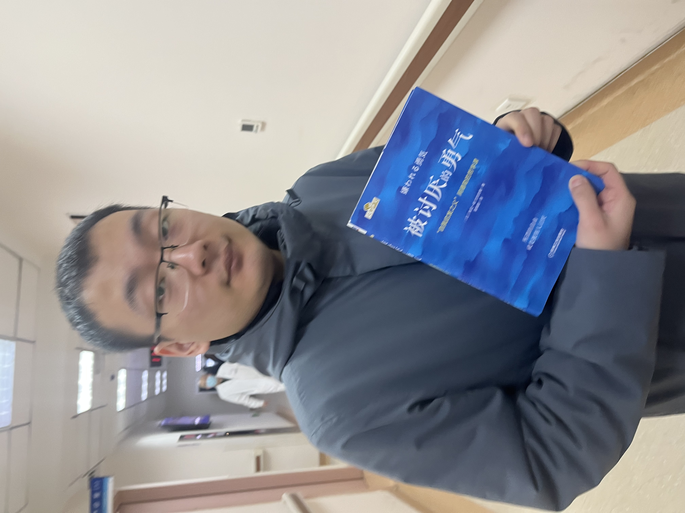

|
Jinhao Duan (段金昊)
I am a PhD student at Drexel University, advised by Prof. Kaidi Xu.
I am interested in Trustworthy Machine Learning, including Adversarial Robustness, Uncertainty Quantification, Security & Privacy of Large Foundation Models, with the potential applications in healthcare.
Email /
Google Scholar /
Github
|

|
-
[01/2025] Paper: GuideLLM (LLM-Guided Conversation) was accepted by NAACL 2025; The short verision was accepted by GenAI4Health@NeurIPS 2024 and won the best demo paper award🏆🏆!！
-
[10/2024] Workshop: We are organizing GenAI4Health@AAAI 2025 in Philadelphia, PA. More details will be released soon!
-
[09/2024] Three papers were accepted:
ReMiND (missing MRI imputation via diffusion models) was accepted by Imaging Neuroscience;
ConU (LLM conformal prediction) was accepted by Findings of EMNLP 2024;
GTBench (LLM game-theoretic benchmark) was accepted by NeurIPS 2024.
-
[07/2024] One paper (VLMs typographic vulnerability) was accepted by ECCV 2024
-
[05/2024] Received PhD Research Excellence Award from CCI, Drexel University
-
[05/2024] SAR was accepted by ACL 2024
-
[05/2024] One paper was accepted by ICML 2024
-
[03/2024] Two papers were accepted by CVPR 2024 and one paper was accepted by NAACL 2024
-
[01/2024] One paper was accepted by ICLR 2024
-
[09/2023] Two papers were accepted by BMVC 2023
-
[05/2023] One paper was accepted by ICML 2023
-
[05/2023] One paper was accepted by IJCAI 2023
Selected Publications
|
(* indicates equal contribution)
|
GuideLLM: Exploring LLM-Guided Conversation with Applications in Autobiography Interviewing
Jinhao Duan*, Xinyu Zhao*, Zhuoxuan Zhang*, Eunhye Grace Ko, Lily Boddy, Chenan Wang, Tianhao Li, Alexander Rasgon, Junyuan Hong, Min Kyung Lee, Chenxi Yuan, Qi Long, Ying Ding, Tianlong Chen, Kaidi Xu
Paper / Short (Workshop)
GenAI4Health@NeurIPS, 2024 (Best Demo Paper Award🏆)
NAACL, 2025
|
GTBench: Uncovering the Strategic Reasoning Limitations of LLMs via Game-Theoretic Evaluations
Jinhao Duan*, Renming Zhang*, James Diffenderfer, Bhavya Kailkhura, Lichao Sun, Elias Stengel-Eskin, Mohit Bansal, Tianlong Chen, Kaidi Xu
Paper / Github / GTBench HF Leaderboard
NeurIPS, 2024
|
ConU: Conformal Uncertainty in Large Language Models with Correctness Coverage Guarantees
Zhiyuan Wang, Jinhao Duan, Lu Cheng, Yue Zhang, Qingni Wang, Hengtao Shen, Xiaofeng Zhu, Xiaoshuang Shi, Kaidi Xu
Findings of EMNLP, 2024
|
Unveiling Typographic Deceptions: Insights of the Typographic Vulnerability in Large Vision-Language Model
Hao Cheng, Erjia Xiao, Jindong Gu, Le Yang, Jinhao Duan, Jize Zhang, Jiahang Cao, Kaidi Xu, Renjing Xu
ECCV, 2024
|
Shifting Attention to Relevance: Towards the Predictive Uncertainty Quantification of Free-Form Large Language Models
Jinhao Duan, Hao Cheng, Shiqi Wang, Alex Zavalny, Chenan Wang, Renjing Xu, Bhavya Kailkhura, Kaidi Xu
Github
ACL, 2024
|
Decoding Compressed Trust: Scrutinizing the Trustworthiness of Efficient LLMs Under Compression
Junyuan Hong*, Jinhao Duan*, Chenhui Zhang*, Zhangheng Li*, Chulin Xie, Kelsey Lieberman, James Diffenderfer,
Brian Bartoldson, Ajay Jaiswal, Kaidi Xu, Bhavya Kailkhura, Dan Hendrycks, Dawn Song, Zhangyang Wang, Bo Li
Paper / Project / Github / Leaderboard / Models
SeT@ICLR, 2024
ICML, 2024
|
ACT-Diffusion: Efficient Adversarial Consistency Training for One-step Diffusion Models
Fei Kong, Jinhao Duan, Lichao Sun, Hao Cheng, Renjing Xu, Hengtao Shen, Xiaofeng Zhu, Xiaoshuang Shi, Kaidi Xu
CVPR, 2024
|
Can Protective Perturbation Safeguard Personal Data from Being Exploited by Stable Diffusion?
Zhengyue Zhao, Jinhao Duan, Kaidi Xu, Chenan Wang, Rui Zhang, Zidong Du, Qi Guo, Xing Hu
CVPR, 2024
|
ReTA: Recursively Thinking Ahead to Improve the Strategic Reasoning of Large Language Models
Jinhao Duan, Shiqi Wang, James Diffenderfer, Lichao Sun, Tianlong Chen, Bhavya Kailkhura, Kaidi Xu
Paper
NAACL, 2024
|
An efficient membership inference attack for the diffusion model by proximal initialization
Fei Kong, Jinhao Duan, RuiPeng Ma, Hengtao Shen, Xiaofeng Zhu, Xiaoshuang Shi, Kaidi Xu
ICLR, 2024
|
ReMiND: Recovery of Missing Neuroimaging using Diffusion Models with Application to Alzheimer's Disease
Chenxi Yuan*, Jinhao Duan*, Nicholas J Tustison, Kaidi Xu, Rebecca A Hubbard, Kristin A Linn
Github
Imaging Neuroscience, 2024
|
RBFormer: Improve Adversarial Robustness of Transformer by Robust Bias
Hao Cheng, Jinhao Duan, Hui Li, Lyutianyang Zhang, Jiahang Cao, Ping Wang, Jize Zhang, Kaidi Xu, Renjing Xu
BMVC, 2023
|
Semantic adversarial attacks via diffusion models
Chenan Wang, Jinhao Duan, Chaowei Xiao, Edward Kim, Matthew Stamm, Kaidi Xu
BMVC, 2023
|
Are Diffusion Models Vulnerable to Membership Inference Attacks?
Jinhao Duan, Fei Kong, Shiqi Wang, Xiaoshuang Shi, Kaidi Xu
Paper / Github (SecMI) / Github (SecMI-LDM)
ICML, 2023
|
Improve Video Representation with Temporal Adversarial Augmentation
Jinhao Duan, Quanfu Fan, Hao Cheng, Xiaoshuang Shi, Kaidi Xu
IJCAI, 2023
|
Adademic Services
Program Committee (PC) member:
EMNLP (2023)
AAAI (2024)
CVPR (2024, 2025)
NeurIPS (2024)
ICLR (2025)
AISTATS (2025)
ICML (2025)
Journal Reviewer:
ACM Computing Surveys
IEEE Transactions on Information Forensics & Security (T-IFS)
IEEE Security & Privacy
Machine Learning
|
Teaching
CS 590: Privacy, College of Computing and Informatics, Drexel University, Spring 2023
CS 486: Robust Machine Learning, College of Computing and Informatics, Drexel University, Spring 2023
CI 101: Computing and Informatics Design I, College of Computing and Informatics, Fall 2022
|
This website template is borrowed from Jon Barron.
|
|
{kind=link}